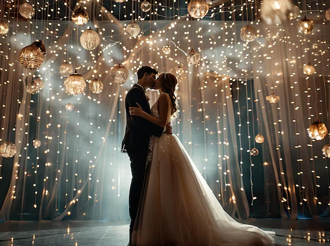

Conoce más sobre Dʼ Cachett
D´ Cachett fue una boutique creada en el año de 1990 para todo tipo de damas que buscaban una expresión exclusiva en la moda y en la manera única y personalizada de la forma de vestir.
El nombre de la tienda está en italiano y significa “Fuera de lo común”. Tiene una versión extranjera y europea, ya que el diseñador era español y hacía diseños exclusivos tanto de vestidos de novia como de graduación y de fiesta en general. La atención a los clientes era muy personalizada y exclusiva para cada una de ellas de acuerdo a sus gustos y necesidades.
En ese lugar, se crearon los vestidos de novia más selectos, exclusivos y rimbombantes de esa época. Desfilaron muchos modelos, realmente elegantes y novedosos.
Aquí en Guadalajara, en esa boutique, se diseñó el primer modelo de vestido de novia de pantalón. Siendo esto una verdadera novedad para las revistas del momento. Incluso fue un escándalo en ese tiempo, ya que la boutique se encontraba ubicada en frente del conocido Templo Expiatorio.
Actualmente, la ubicación de la tienda ya no existe en tiempo real ni físico. Sin embargo, contamos con esta página la cual tiene algunos modelos exclusivos de varias marcas reconocidas. Tenemos en existencia desde las tallas más pequeñas hasta tallas extra, con modelos únicos, exclusivos y diferentes a lo que suelen encontrarse en otras boutiques y tiendas departamentales dentro de la zona metropolitana de Guadalajara.
Desde nuestros inicios, nos hemos dedicado a seleccionar los mejores diseños y telas para garantizar que cada cliente encuentre el vestido perfecto para su evento. Ya sea una boda, una gala o una celebración especial, en Dʼ Cachett nos enorgullece formar parte de esos recuerdos inolvidables.
Nos esforzamos por brindar un servicio excepcional, asesorando a cada cliente con dedicación y profesionalismo. Nuestra misión es hacer que cada mujer se sienta única y segura con nuestros vestidos.
¡Gracias por ser parte de nuestra historia!